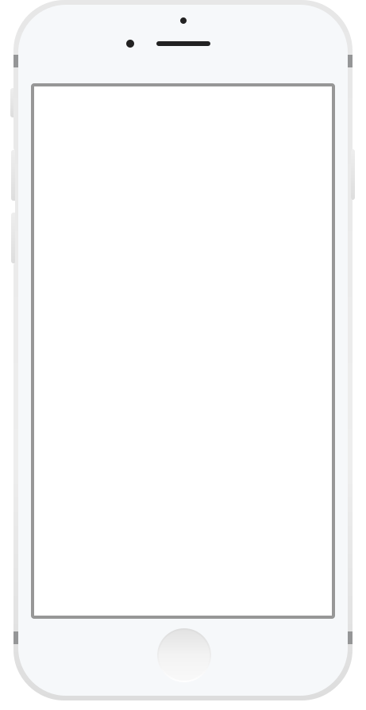

<ng-container *ngIf="project$ | async as project">
  <li class="hex">
    <div class="hexIn">
      <ake-hex class="hexLink" [project]="project"></ake-hex>
    </div>
  </li>

  <pre>{{ project | json }}</pre>

  <div *ngIf="project?.path" class="project__showcase">
    
    <iframe
      class="project__showcase-frame"
      [src]="getIframeSrc(project.path)"></iframe>
  </div>
</ng-container>
